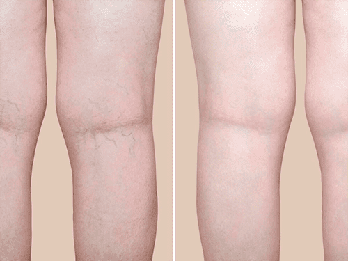

Niektórzy uważają żylaki za prostą patologię, ale w rzeczywistości patologia ta może powodować poważne komplikacje. Czy wiedziałeś, że 37% dorosłych cierpi na rozszerzenie żylne, a co piąty z nich jest narażony na śmierć z powodu oderwania zakrzepu? Na szczęście dzisiaj pomoc w tym problemie jest znacznie łatwiejsza niż kiedykolwiek: bez środków farmaceutycznych, operacji i drogich zabiegów. Ale jeszcze przed pojawieniem się środka , z powodu żylaków zmarło wiele znanych osób, o których dzisiaj opowiemy.
5 miejsce: Isaac Newton
Niewiele osób wie, ale światowej sławy fizyk interesował się medycyną ludową, dzięki czemu żył do 85 lat. Zaskoczył cały świat swoją genialnością i dobrym zdrowiem, ale okazał się bezsilny wobec żylaków. Jednym z objawów tego problemu jest guzowatość, która utrudnia normalny przepływ krwi. Dlatego w niektórych miejscach powstają skrzepy krwi, które mogą zatkać żyłę i przekształcić się w zakrzep. Jeden nieprawidłowy ruch, a ten zakrzep może się oderwać i zacząć chodzić po układzie krążenia, docierając do płuc, wątroby, a nawet mózgu.
Tak właśnie stało się z Isaakiem Newtonem w 1727 roku – żylaki spowodowały tworzenie się zakrzepu, który zablokował przepływ krwi do tętnicy sercowej. I całkowicie zdrowy, choć starszy człowiek zmarł w ciągu minuty, nie wstając z krzesła.
Przed 1920 r. zakrzepica była główną przyczyną śmiertelności, zajmując drugie miejsce po chorobach zakaźnych.
4 miejsce: Karol Marks
Znany filozof i słynny ekonomista zmarł na zapalenie błony śluzowej oskrzeli. Jak wykazała sekcja zwłok, przyczyną rozwoju choroby był skrzep krwi utworzony z powodu żylaków. W przeciwieństwie do Newtona, Karol Marks cierpiał z powodu konsekwencji rozszerzenia żylnego przez pełne 15 miesięcy, po czym choroba przekształciła się w zapalenie oskrzeli i ropień prawego płuca.
Interesujące jest to, że w czasach Marksa medycyna była już wysoko rozwinięta. Jednak on, jak wielu innych filozofów, nie uznawał jej za naukę i obawiał się specjalistów. Doprowadziło to do tego, że patologia, taka jak żylaki, doprowadziła go do długiej i bolesnej śmierci.
Ciekawostka: zdaniem naukowców, gdyby w czasach Marksa istniały takie nowoczesne środki na żylaki jak żel lub laseroterapia, filozof byłby w stanie żyć znacznie dłużej.
3 miejsce: Coco Chanel
Światowej sławy projektantka mody i założycielka domu mody Chanel zmarła w hotelu Ritz na atak serca, który był spowodowany skrzepem krwi w pniu tętnicy serca.
Ostatnie lata życia spędziła samotnie, a jak później okazało się, wynikało to z tego, że bała się być naga przed mężczyzną z powodu guzowatych żylaków. W chwili śmierci na koncie Coco Chanel było 15 milionów dolarów, mimo że dziś skuteczny środek na żylaki kosztuje mniej niż dwie filiżanki kawy.
Chociaż Coco Chanel miała więcej szczęścia niż jej matka – ta zmarła na tę samą chorobę w wieku 33 lat. Nawiasem mówiąc, powikłania żylaków nawiedzały Coco Chanel przez ostatnie 4 lata jej życia, co można prześledzić z jej zdjęć – na zdjęciach z tamtych lat widać, że nie pozwalała robić jej zdjęcia w pełnym wzroście ani nie zakładała spódnicy.
2 miejsce: Henry Ford
Nasze ciało to pojedynczy układ krążenia. A jeśli problemy z żyłami koncentrują się w nogach, nie oznacza to, że reszta ciała jest bezpieczna. Tak stało się z Henrym Fordem, który stał na początku całej ery firmy Ford.
Od 50 roku życia Henry Ford cierpiał na chroniczne zmęczenie nóg spowodowane żylakami. Dlatego właśnie zamiast chodzić pieszo wolał samochody. Nawet zwykła wycieczka do najbliższej kawiarni była dla Forda prawdziwym wyzwaniem. W swoim pamiętniku opublikowanym w 1963 roku przyznał, że nigdy nie nosił szortów, ponieważ jego nogi przypominały amerykańskie off-roady.
Henry Ford tak długo ignorował żylaki, że z powodu zaburzenia odżywiania tkanek rozwinął się u niego wrzód troficzny. Jest to wyraźne uszkodzenie żył odpiszczelowych, na które cierpi 15% pacjentów w wieku poniżej 40 lat. A najbardziej groźnym powikłaniem owrzodzenia troficznego jest złośliwe odrodzenie (guz nowotworowy), które występuje w 2% przypadków.
18+
Kliknij,
aby zobaczyć
Lucyna Balszyk, Poznań
Kilka miesięcy temu usłyszałam o tym żelu i natychmiast go zamówiłam! Teraz czuję, że stałam się o 20 lat młodsza, nogi w końcu nie bolą!
Anna K., Warszawa
Dziękuję bardzo. Szczerze mówiąc, nie ufałam temu żelowi, ale kiedy zaczęłam go używać, zdałam sobie sprawę, że ludzie nie kłamią. Objawy zniknęły dość szybko, chociaż wcześniej próbowałam prawie wszystko, nawet myślałam o operacji.
Magdalena Hołówka, Jędrzejów
Moja bliska przyjaciółka poszła do nieba z powodu owrzodzeń troficznych. Postanowiłam zamówić i zacząć go stosować w celu zapobiegania.
Dorota M., Jędrzejów
Dziękuję za otwarcie ludziom oczu! Moja siostra, jak i ja ma żylaki, zamówiłam dla nas obu.
Lucyna H., Warszawa
Ja też zamówiłam. Obiecali dostarczyć paczkę w ciągu tygodnia, czekam z niecierpliwością.
Lilia Jakuszewska, Jarosław
Jak dobrze, że zobaczyłam ten artykuł! W mojej rodzinie żylaki są dziedziczone, wszystkie kobiety cierpią z tego powodu! Spróbuję, a potem, jeśli coś, zamówię wszystkim.
Wanda Pępek, Lublin
Dopiero wczoraj zobaczyłam w telewizji program, w którym chodziło o ten żel. Chwalili go.
Jagoda Banaczyk, Warszawa
Dwóch moich bliskich zmarło z powodu żylaków. Na pewno zamówię.
Helena Malinowska, Bielsko-Biała
Wreszcie przystępna cena! Byłoby dobrze, gdyby została zachowana.
Agnieszka, Lublin
Czy to nie jest jakieś oszustwo? Dlaczego jest sprzedawany tylko w Internecie?
Joanna Łukasik, Przemyśl
Pani Agnieszko, czytała Pani artykuł? Jest sprzedawany w Internecie, ponieważ pojawiło się wiele podróbek. Nawiasem mówiąc, płatność jest dopiero po otrzymaniu, co oznacza, że najpierw widzisz, sprawdzasz, a następnie płacisz. Wszystko jest teraz sprzedawane w Internecie - od ubrań po meble i telewizory. Czego się bać?
Agnieszka, Lublin
Nie zauważyłam, że płatność po otrzymaniu. Wtedy nie mam żadnych pytań, jeśli płatność przy odbiorze), zamawiam.
Zuzanna Adamczyk, Wrocław
Zamówiłam miesiąc temu. Żel pomaga zapomnieć o bólu po dniu pracy na nogach i nie tylko!

Iwona, Bydgoszcz
Od trzech lat cierpię na żylaki. Mam zakrzepowe zapalenie żył. Boję się strasznie(( Zamówiłam i już zaczęłam stosować.
Mirosław H., Białystok
To cud, że taki środek istnieje! Mam nadzieję, że w przyszłości będzie bardziej dostępny. Chociaż cena jest już dostępna, zarezerwowałem kurację dla siebie i żony. Z żylakami lepiej nie żartować!